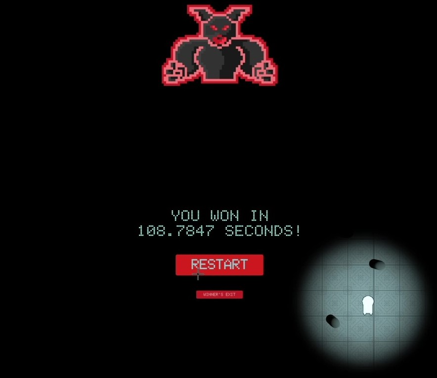

the Light Game
This game was developed in Unity as an individual project for my Game Design class.Overview
The general concept of the game is that you are a being made of light in a world of darkness
so you can only see the area immediately around you.
You must collect energy crystals to fuel your light attacks to defeat the boss without
getting hit. As the boss loses health, his attacks become stronger and more frenzied in
an attempt to defeat you.
To balance his increasing attacks, you become faster and your light gets stronger, allowing
you to see a little more area around you every time you deal him damage.
Game Play
Development
The base requirements for this game were to create:- a player that moves
- obstacles that move toward the player
- objects for the player to collect
The Player
You play as a being made of light. He is a 2D Sprite moving in a 3D world. He also has a spotlight that follows him and can increase in size and intensity at certain parts of the game. All of his actions are controlled by a C# script.The Obstacles
There are three types of obstacles in this game.The first type are static. They are simple pillars randomly placed at the start of each game. Their purpose is to create an obstacle for the player to have to move around, but they can also provide shelter from bombs and bullets. The pillars are instantiated as part of the starting script, but their audio is controlled with a Bolt Flow Machine.
The second type of obstacle are the bullets. These are the most plentiful throughout the game. They spawn from the pulsing bullet spawners and have two modes. The first mode moves them toward a static target outside the play area. Each bullet moves towards a different target, which is what creates the spiral pattern. The second mode is almost the same, but the bullets move toward a moving target placed outside the play area. There are four targets total that move ten degrees after each spawn. The bullets are destroyed upon colliding with the pillars or a wall. If they hit the player, it is game over. The frequency and speed of the bullets as well as the number of bullet spawners increases as the game goes on. By the end, there are four bullet spawners producing an almost non-stop slew of bullets. Its a lot to deal with.
The final type of obstacle is the bomb. It is not introduced until the third level and at first, it just shoots in the general direction of the player, but in the last two levels it chases the player.
The bullets and bombs are all controlled with C# scripts.
The Objects
The objects to collect are energy crystals. Each crystal gives you 1 energy point, which you need to attack the boss or increase your light. Increasing your light a little will cost you one energy and allows you to see more of the surrounding area . A light attack costs ten energy, but clears all the bullets and deals damage to the boss. It also advances you to the next level. These game objects are controlled with a Bolt Flow Machine.The Boss
This was not a requirement of the class, but I added him to give a motivation and objective to the game. He is also completely controlled by a Bolt Flow Machine. This was by far the largest Flow Graph I created in the entire game and it controls all aspects of the boss from animations, to levels, to triggering bullet and bomb events. It also gave me the opportunity to learn how Bolt Flow Machines interact with Unity scripts and vice versa.The Artwork
As a computer science student, we were allowed to get our art assets from external sources, such as the asset store. Fortunately, I have my own personal asset creator named Ross T. Turner who did all the pixel art for this game. Thank you Ross! I still did the animations, but he created all the sprite sheets for my characters and objects as well as the background. Check out his page to see more of his work!More to come...
This game is still in development. Check back later for more updates!
Want to play the current version?
You can download the executable by clicking the button below. (It is currently only built for Windows)
Once you have downloaded the .zip, unpack it and open the "theLightGame.exe"
Good Luck! Feel free to email me comments, suggestions, or a screenshot of your win screen to be featured here on my site!
Download v1.3
Best Times
Send me a screenshot of your win screen & your preferred name to be featured here!

Ross T. Turner: 108.7847 s